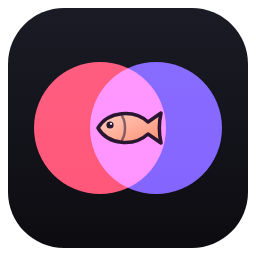

Like The Fish's Crossfader
YouTube playlists, one continuous mix.
YouTube account
Sign in to use YouTube Premium (no ads) and your unlisted playlists.
Playlists
Playlists you play are saved here automatically, so next time it's one click. You can rename or remove them.
Public and unlisted playlists work. A private playlist won't play — in YouTube, open the playlist, click the pencil/settings and change it to Unlisted.
Transitions
Just after that mark, the song starts a long, gentle blend into the next one — at a quieter moment if one comes along in the next 20 seconds.
Trim gaps
Starts the next song as soon as one goes quiet at the end, and jumps past silent starts. Listens to your PC's sound output, so other sounds playing at the same time can confuse it.
Skip talking and filler SponsorBlock
Uses community-marked timestamps to start each video where the music starts and fade out where it ends. Videos nobody has marked fall back to the trim settings above.
Sound
You can also change these while the mix plays: move the mouse and click the sliders button, or press E.
Song facts
Facts come from Wikipedia, and the release year from MusicBrainz. They're looked up by the song's title, so a few songs will have none or the odd mismatch.
Display
Tip: change the caption font, size and colours with the ⚙ settings button in the YouTube player.
About & legal
Like The Fish's Crossfader — made by Nathan Salmon.
Videos play in YouTube's own embedded player. By using this app you agree to the YouTube Terms of Service, and Google's handling of data is covered by the Google Privacy Policy. This app isn't affiliated with or endorsed by YouTube or Google.
Privacy: settings and My playlists stay on this PC. To find skips and song facts the app sends video IDs and song titles to SponsorBlock, MusicBrainz and Wikipedia. No accounts, ads or tracking of your own. Full privacy policy
Credits: skip data © SponsorBlock contributors, CC BY-NC-SA 4.0. Song and artist facts from Wikipedia, CC BY-SA 4.0; release years from MusicBrainz. Fonts: Press Start 2P, VT323, Righteous, Audiowide, Shrikhand, Fredoka — SIL Open Font License.
Keyboard controls while playing
- Space
- Pause / resume
- R
- Restart the current song
- Home or B
- Back to the start of the playlist
- S or Page Down
- Jump ahead 5 songs
- V
- Visualizers on every video / only when there’s room
- → or N
- Crossfade to the next song now
- Shift + →
- Quick 1.5-second cut to the next song
- ← / Shift + ←
- Jump back / forward 10 seconds
- ↑ / ↓
- Volume
- I
- Show song info
- T
- Show the next song fact now
- C
- Closed captions on / off
- E
- Open / close the sound panel
- Mouse
- Move it to show the control buttons
- D
- Move to the next monitor
- F
- Toggle full screen
- Esc
- Stop and return here